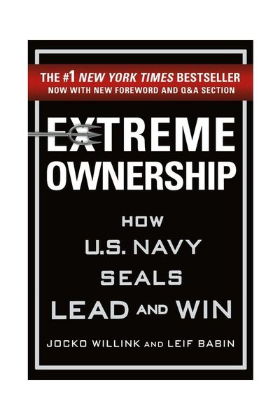

Why Did Rana Plaza Fail?
They Saw the Cracks on Tuesday. They Ordered Everyone In on Wednesday.
📜 What Happened
On April 23, 2013, cracks appeared in the walls of Rana Plaza, a Dhaka building holding five garment factories. A bank and shops on lower floors evacuated and stayed out. But the factories had deadlines for Western fast-fashion brands — so managers ordered 3,000+ workers back in the next morning, some threatened with docked pay. The building collapsed at 8:57 AM, killing 1,134 people. The owner had illegally added three floors and heavy generators to a structure built for shops, on swampy ground, with commercial-grade permits.
☠️ The Fatal Mistake
A chain of people — owner, managers, brands squeezing costs — each pricing a visible, screaming risk at zero because acknowledging it was expensive.
🧠 The Lesson (Free for You)
When the downside is irreversible, the warning IS the event. Any culture that punishes stopping more than catastrophe will eventually get the catastrophe — deadlines resurrect; people don't.
📕 The Antidote Book

Written by two SEAL officers who led in Ramadi's brutal urban combat, the book's core is one uncomfortable rule: the leader owns EVERYTHING in their world — every failure, every miscommunication, every underperformer.…
📖 OPEN THE FULL INTERACTIVE BREAKDOWN →Searchable, filterable, free forever — they paid billions; your lesson is free.